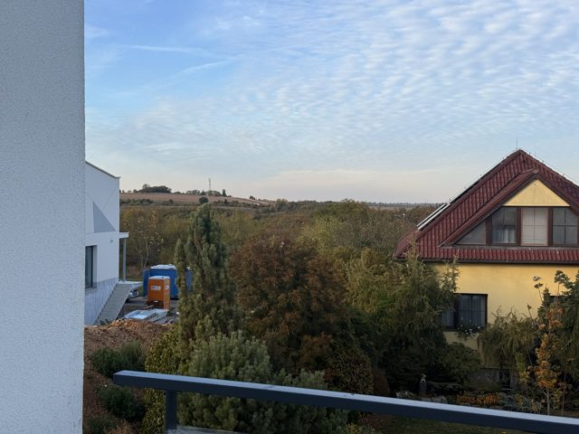
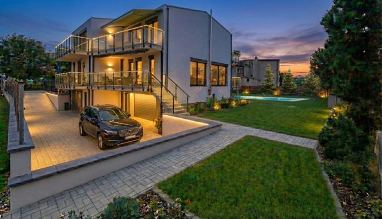
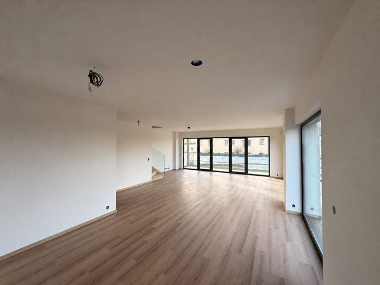
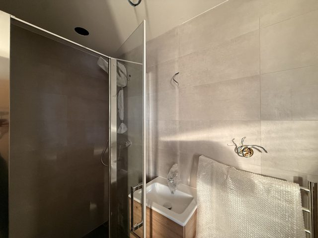
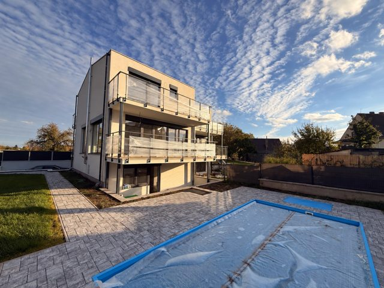

Plán dne · neděle 8. 11. 11:30–16:15
Odpoledne kvůli mlze. Nejdřív interiér a Eva (slunce z jihu svítí do oken), pak venku ze země, od 14:30 dron (slunce z JZ svítí na zahradní stranu B) a na konec zlatá hodina s Evou. Slunce 11:30 175° a 23°, 14:30 220° a 14°, 15:30 233° a 7°, západ 16:28.
Bílý dvojdům A+B přímo u silnice Bažantní, naproti přes silnici louka. B je severní polovina (blíž k trojdomu C–E), zahrada s bazénem za domem na západ. Zastavit na silnici u bodu P.
Bod P · 50.142046, 14.373143
Výjezd v 11:00, na místě kolem 11:30, konec 16:15 (západ 16:28). Na místě p. Sládek – domluvit klíče a zapnutá světla.

Jak točit
- Lety krátce (10–15 s), pomalu a plynule. Jen rovná dráha nebo oblouk do 30° kolem domu, nikdy otáčení na místě, sklon kamery během letu neměnit.
- Na začátku a konci letu 3 s staticky. SRT (telemetrie) zapnuté. 4K, 25 fps.
- Před každým záběrem nahlas číslo řádku (u dronu 1 s telefonu s číslem) – podle něj se klipy v FD Studiu přiřadí ke scénáři.
- Klíčové věci točit i na výšku (řádky 1, 5, 9, 16): reel, Instagram a reklama 9:16 je nedostanou z výřezu v kvalitě.
- Fotky ze stativu ve výšce 1,4 m, svislice rovně, bez lidí, všechna světla zapnout. Zadní schody k bazénu nejsou a nebudou v základní ceně – zahradu točit tak, aby chybějící schody nebyly téma.
- Mlha ráno: interiér je stejně první. Dron až když se zvedne – nebo naopak využít mlhu nad údolím pro řádek 13.
Shotlist · číslo = mapa · K = kapitola filmu · štítky = kam záběr půjde
další 2 varianty
B Vítejte ve Vyhlídkách. Dům je hotový a můžete se nastěhovat hned – podívejte se, kolik světla sem jde.
C Hotový dům v Praze 6. Za okny údolí.
další 2 varianty
B Na provoz tu stavitel myslel za vás: čerpadlo, fotovoltaika, baterie a celý dům ovládáte z mobilu.
C Technika za stovky tisíc. V ceně.
další 2 varianty
B Kde v Praze 6 máte bazén, zahradu a za domy přírodní rezervaci? Ukážu vám to.
C Praha 6. Bazén. Údolí. Pojďte se mnou.
další 2 varianty
B V bytě tohle nemáte. Počítejte se mnou.
C Byt, nebo tohle?
další 2 varianty
B Bazén – jedna. Zahrada – dvě. A tři: místo, kde končí Praha.
C Bazén. Zahrada. Údolí.
další 2 varianty
B Hotovo, zkolaudováno, klíče čekají. Ozvěte se.
C Napište mi.
další 2 varianty
B Bazén, zahrada a za ní louky a údolí. Tohle je kraj Suchdolu.
C Bazén. Zahrada. Údolí.
další 2 varianty
B Chcete se přijít podívat? Domluvíme si termín jen pro vás.
C Zavolejte, provedu vás.
Film 16:9 · cca 66 s
Hlavní video. Začátek filmově (genius loci, bez titulků), pak svižná realitní část s titulky v prostoru a Evou jako průvodkyní. Natáčí se jinak, podle světla (Plán dne). Odkaz „řádky“ skočí do shotlistu.

1Kde končí Praha 0:00–0:08
Genius loci: nízké zlaté slunce nad krajem obce a údolím, dron se blíží k domu B (řádek 17). Když bude mlha, záběr nad mlhou (13). Bez titulků kromě názvu, filmově.
Natočit: → řádky 13, 15, 17

2Dům B 0:08–0:14
Oblouk kolem zahradní fasády v odpoledním světle (12), pak příchod od ulice ke vstupu (8).
Natočit: → řádky 8, 12

3Eva 0:14–0:20
Eva u velkých oken v obýváku. Jedna věta, za ní zahrada.
další 2 varianty
B Vítejte ve Vyhlídkách. Dům je hotový a můžete se nastěhovat hned – podívejte se, kolik světla sem jde.
C Hotový dům v Praze 6. Za okny údolí.
Natočit: → řádky 5

4Uvnitř 0:20–0:36
Montáž na údery: obývák s kuchyní, schody, pokoje a koupelna v patře, garsonka s terasou v 1.PP, garáž. Titulky v prostoru.
Natočit: → řádky 1, 2, 3, 4
5Technika v ceně 0:36–0:42
Eva u ovládání Loxone, detaily techniky (čerpadlo, baterie, panel).
další 2 varianty
B Na provoz tu stavitel myslel za vás: čerpadlo, fotovoltaika, baterie a celý dům ovládáte z mobilu.
C Technika za stovky tisíc. V ceně.
Natočit: → řádky 2, 4, 6

6Zahrada a bazén 0:42–0:50
Z terasy ke kraji zahrady (9), shora pozemek (14). Bazén je v listopadu zazimovaný: krátce, letní podobu ukáže vizualizace se štítkem.
další 2 varianty
B Bazén, zahrada a za ní louky a údolí. Tohle je kraj Suchdolu.
C Bazén. Zahrada. Údolí.
Natočit: → řádky 9, 14, 16
7Kraj Suchdolu 0:50–0:58
Stoupání nad zahradou do údolí (13), louka naproti (15), cesta Ke Kozím hřbetům (11). Vzdálenosti před titulky ověřit.
Natočit: → řádky 11, 13, 15
8Prohlídka 0:58–1:06
Eva na terase ve zlatém světle (16), konec na fasádě v zapadajícím slunci (18) + logo RE/MAX. Cena až po potvrzení majitelem.
další 2 varianty
B Chcete se přijít podívat? Domluvíme si termín jen pro vás.
C Zavolejte, provedu vás.
Natočit: → řádky 16, 18
Instagram, reel a film na výšku
Instagram Evy organicky (bez placené reklamy na Metě – Franta na schůzce: Meta zatím ne). Reel prodává konkrétní věci z domu.
Vstup na Instagram (Eva, 20–30 s)
Natočit zvlášť na mobil na výšku, osobně a do kamery, u okna s výhledem. Pod tím 3 záběry z domu na výšku (gimbal 9:16 v řádcích 1, 9, 16).
další 2 varianty
B Kde v Praze 6 máte bazén, zahradu a za domy přírodní rezervaci? Ukážu vám to.
C Praha 6. Bazén. Údolí. Pojďte se mnou.
Natočit: → řádky 7
Reel „3 věci“ (~25 s)
Hook před domem do 2 s, pak bazén → zahrada → údolí (střih na údery, Eva ukazuje prsty 1–2–3), konec Eva na terase. Titulky po slovech.
další 2 varianty
B V bytě tohle nemáte. Počítejte se mnou.
C Byt, nebo tohle?
další 2 varianty
B Bazén – jedna. Zahrada – dvě. A tři: místo, kde končí Praha.
C Bazén. Zahrada. Údolí.
další 2 varianty
B Hotovo, zkolaudováno, klíče čekají. Ozvěte se.
C Napište mi.
Natočit: → řádky 10, 16
Film na výšku 30–45 s
Výřez z filmu: dron, Eva E1 a E4, interiér. Pro reklamu na YouTube Shorts a stories (formát 9:16 z 4K, Eva točená i na výšku).
Natočit: výřez z filmu
Co z natáčení kam půjde
Každý řádek shotlistu má štítek, kam jeho záběr půjde (film, reel, IG, banner A/B/C, portály, vizualizace). Tady je pořadí kanálů ze schůzky 6. 11. a tři reklamní sdělení pro test A/B/C.
Fáze 1 · naše síť týden po schválení výstupů
Eva pošle RE/MAX a síti 200 makléřů krátkou zprávu „Znáte někoho, kdo by si to mohl koupit?“ s odkazem, filmem a 6 fotkami. Odměna za doporučení kupce – výši a kdo ji platí domluvit s p. Sládkem. Eva zároveň dá vstup a reel na svůj Instagram.
Fáze 2 · veřejně po fázi 1, ještě před Vánoci
Nová nabídka s novými fotkami: portály v kategorii Domy (4+kk + garsonka se zahradou), film a 3D/fotky. Slevy ani bonusy v inzerátu neukazovat – až při jednání.
Google · vyhledávání od fáze 2
Hledání „dům se zahradou Praha 6“, „novostavba Suchdol“, „dům s bazénem Praha“. Tři sady textů A/B/C, každé pondělí report a úprava.
Google · bannery a YouTube od fáze 2
Bannery 1200×628, 1200×1200, 960×1200 a 300×250 z fotek (řádky označené „banner A/B/C“), YouTube 15 s a 6 s z filmu, Shorts z verze na výšku.
Meta (Facebook, Instagram) zatím ne
Placená reklama na Metě zatím vypnutá (kupci 35–45 let hledají přes Google a portály). Instagram jen Evin organicky. Zapnout, až když síť a Google nestačí.
Test A/B/C (Google, vždy titulek + hero záběr + 15s výřez)
Co se děje dál
Do 7 dnů (do ne 15. 11.)
První výstupy ke schválení p. Sládkovi: film v1, reel, Evin vstup na IG, 30 vybraných fotek. Nezatěžovat ho dalšími otázkami.
Vizualizace
Z fotek prázdných místností (řádky 1–4): obývák s kuchyní, ložnice, dětský pokoj, garsonka v 1.PP, letní zahrada s odkrytým bazénem (řádky 9 a 18). Vždy štítek „Vizualizace“, jeden styl pro celou sadu. Pokud bude 3D prohlídka B, vizualizace až po ní.
Půdorysy
Upravit půdorysy B: vymazat zadní schodiště k bazénu (není v základní ceně – příplatek). Dveře jako volitelný příplatek.
Cena a podklady
Základní cena co nejnižší (pod 25 mil.) bez zadních schodů a dveří – číslo potvrdí p. Sládek. Ceny příplatků (schody ~75 tis., s podestou ~160 tis.) od něj.
Prohlídky
Jen individuálně s Evou, žádné hromadné dny otevřených dveří.